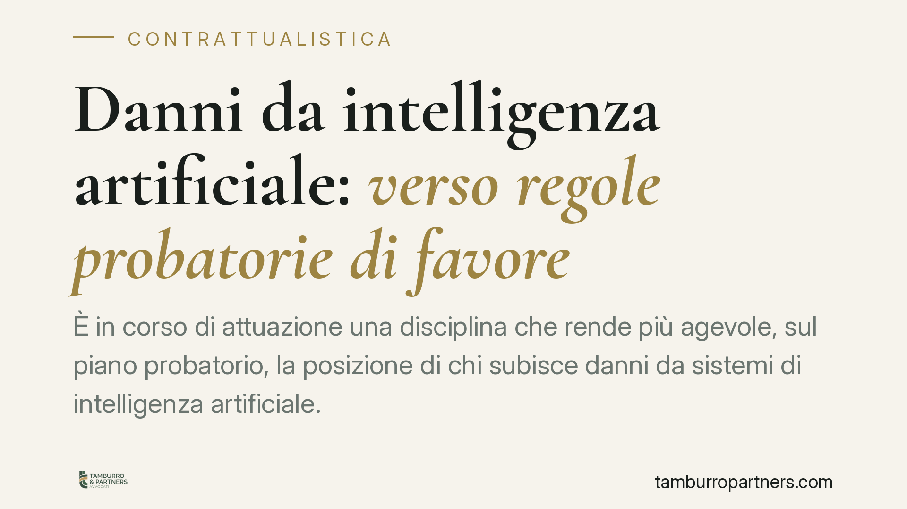

Danni da intelligenza artificiale: verso regole probatorie di favore
È in corso di attuazione una disciplina che rende più agevole, sul piano probatorio, la posizione di chi subisce danni da sistemi di intelligenza artificiale. Si parla di esibizione dei log, presunzione del nesso di causalità e azione diretta contro l'assicuratore. Le regole sostanziali del codice civile, però, restano. Ecco perché conta e come prepararsi, soprattutto sul fronte contrattuale.

Il quadro: attenzione allo stato dell'iter
La materia della responsabilità civile per danni da intelligenza artificiale è oggetto di un percorso normativo articolato, che muove dal Regolamento UE 2024/1689 (il cosiddetto AI Act) e dalla legislazione nazionale in corso di attuazione.
Una precisazione doverosa: alla data di questo contributo, i riferimenti a specifici decreti attuativi nazionali e alle relative numerazioni non risultano ancora pienamente consolidati in Gazzetta Ufficiale. Ne parliamo quindi come di uno schema di intervento in corso di attuazione, con regole probatorie di favore ancora da confermare nella loro formulazione definitiva. Prima di ogni decisione operativa è indispensabile verificare il testo effettivamente pubblicato e la sua entrata in vigore.
Ciò premesso, la direzione è chiara e ricalca l'impostazione europea: agevolare la prova per il danneggiato, senza stravolgere i criteri di imputazione della responsabilità.
Regole probatorie e regole sostanziali: la distinzione decisiva
È il punto da tenere fermo. Le novità attese incidono su come si prova il danno, non su quando si è responsabili.
Le regole sostanziali continuano a essere quelle del codice civile: responsabilità contrattuale (art. 1218 c.c.), extracontrattuale (art. 2043 c.c.), da cose in custodia (art. 2051 c.c.) e da attività pericolose (art. 2050 c.c.), oltre alla disciplina della responsabilità da prodotto difettoso (attualmente d.lgs. 206/2005 - Codice del Consumo, in via di aggiornamento con la Direttiva UE 2024/2853 sulla product liability).
Su questo impianto si innestano tre strumenti probatori.
I tre strumenti
1. Esibizione dei log. Il danneggiato potrà chiedere al giudice di ordinare l'esibizione della documentazione tecnica e dei registri di funzionamento del sistema (i log). È la risposta al problema della "scatola nera": senza accesso ai dati interni, dimostrare cosa sia accaduto è spesso impossibile.
2. Presunzione del nesso di causalità. In presenza di una violazione degli obblighi previsti dall'AI Act, potrà operare una presunzione del collegamento tra il malfunzionamento e il danno. Attenzione: si tratta di una presunzione relativa, cioè superabile con prova contraria. Non è un automatismo di responsabilità. Il convenuto conserva la possibilità di dimostrare che il danno ha una causa diversa.
3. Azione diretta contro l'assicuratore. Il danneggiato potrebbe agire direttamente nei confronti della compagnia che copre il rischio, senza dover prima passare dal responsabile. È un meccanismo già noto nel nostro ordinamento: lo prevede l'art. 144 del d.lgs. 209/2005 (Codice delle Assicurazioni Private) per la RC auto.
Implicazioni pratiche
Per le imprese sviluppatrici. Cresce il peso della tracciabilità. Log incompleti o non conservati diventano un rischio processuale, perché l'esibizione potrà essere ordinata dal giudice.
Per i deployer (chi utilizza il sistema nella propria attività). La conformità all'AI Act non è solo un obbligo regolatorio: la sua violazione può attivare la presunzione sul nesso causale. La compliance diventa anche strategia difensiva.
Per i danneggiati. La posizione processuale si rafforza, ma l'onere di dimostrare danno e violazione permane. Le regole di favore alleggeriscono, non azzerano, la prova.
Per gli assicuratori. L'azione diretta ridisegna l'esposizione e impone una tariffazione più fine del rischio IA, oltre a un ripensamento delle clausole di polizza.
Il profilo contrattuale: ripartizione del rischio e regresso
Qui si gioca la partita per chi opera nella filiera dell'IA. Sviluppatore, integratore e utilizzatore professionale sono legati da contratti di fornitura, licenza e servizio. Se la responsabilità verso il terzo si fa più accessibile, diventa centrale definire a monte chi risponde di cosa.
Rilevano in particolare: le clausole di manleva e di limitazione della responsabilità (nei limiti dell'art. 1229 c.c.), gli obblighi di conservazione e messa a disposizione dei log, le garanzie sulla conformità all'AI Act, i meccanismi di regresso tra le parti e i requisiti di copertura assicurativa da imporre ai fornitori.
Cosa fare in concreto
- Verificare lo stato effettivo della normativa attuativa e la sua entrata in vigore prima di assumere decisioni: il quadro è in evoluzione.
- Rivedere i contratti di fornitura e licenza di soluzioni IA, introducendo clausole chiare su ripartizione del rischio, manleve e regresso.
- Predisporre politiche di tracciabilità e conservazione dei log adeguate a un possibile ordine di esibizione.
- Allineare i processi agli obblighi dell'AI Act, documentando la conformità come presidio anche difensivo.
- Riesaminare le coperture assicurative, valutando i limiti attuali rispetto all'esposizione da azione diretta.
Disclaimer
Contributo informativo a cura di Tamburro & Partners - Avv. Giuseppe Tamburro. Non costituisce parere legale.
Ogni contratto ha il suo equilibrio.
Se vuoi una revisione delle clausole o una redazione su misura, scrivi allo studio. Ti rispondiamo entro un giorno lavorativo.